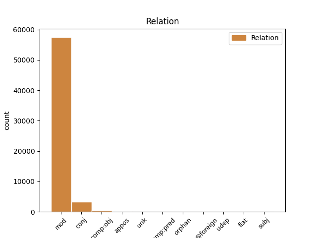
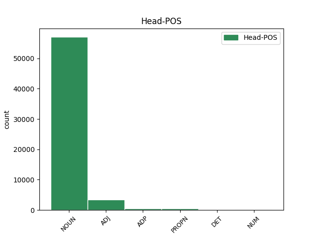
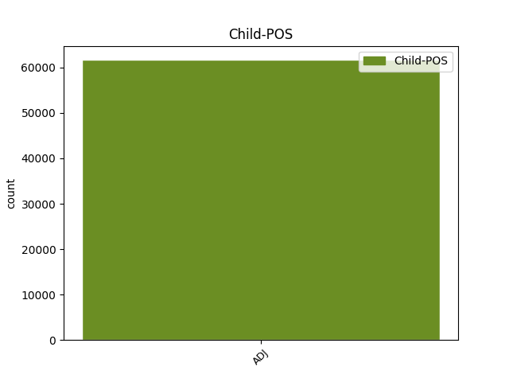

Distribution of features within this leaf



Agreement Rules sorted by frequency.
- When the dependent token is the modifer(mod) of the head token, and the head token is NOUN and the dependent token is ADJ.
1 Naproti _ _ _ _ 0 _ _ _
2 tomu _ _ _ _ 0 _ _ _
3 prvky _ _ _ _ 0 _ _ _
4 , _ _ _ _ 0 _ _ _
5 kterým _ _ _ _ 0 _ _ _
6 chybí _ _ _ _ 0 _ _ _
7 jeden _ _ _ _ 0 _ _ _
8 obvodový _ _ _ _ 0 _ _ _
9 elektron _ _ _ _ 0 _ _ _
10 do _ _ _ _ 0 _ _ _
11 úplného _ _ _ _ 0 _ _ _
12 obsazení _ _ _ _ 0 _ _ _
13 krajní _ _ _ _ 0 _ _ _
14 slupky _ _ _ _ 0 _ _ _
15 a _ _ _ _ 0 _ _ _
16 tvoří _ _ _ _ 0 _ _ _
17 jednomocné _ _ _ _ 0 _ _ _
18 záporné _ _ _ _ 0 _ _ _
19 ionty _ _ _ _ 0 _ _ _
20 a _ _ _ _ 0 _ _ _
21 vznikající _ _ _ _ 0 _ _ _
22 připoutáním _ _ _ _ 0 _ _ _
23 dalšího další ADJ AAIS2----1A---- Animacy=Inan|Case=Gen|Degree=Pos|Gender=Masc|Number=Sing|Polarity=Pos 24 mod _ _
24 elektronu elektron NOUN NNIS2-----A---- Animacy=Inan|Case=Gen|Gender=Masc|Number=Sing|Polarity=Pos 0 _ _ _
25 . _ _ _ _ 0 _ _ _
1 Prvky _ _ _ _ 0 _ _ _
2 se _ _ _ _ 0 _ _ _
3 dvěma _ _ _ _ 0 _ _ _
4 obvodovými _ _ _ _ 0 _ _ _
5 elektrony _ _ _ _ 0 _ _ _
6 tvoří _ _ _ _ 0 _ _ _
7 jednomocné jednomocný ADJ AAIP4----1A---- Animacy=Inan|Case=Acc|Degree=Pos|Gender=Masc|Number=Plur|Polarity=Pos 0 _ _ _
8 i _ _ _ _ 0 _ _ _
9 dvojmocné dvojmocný ADJ AAIP4----1A---- Animacy=Inan|Case=Acc|Degree=Pos|Gender=Masc|Number=Plur|Polarity=Pos 7 conj _ _
10 ionty _ _ _ _ 0 _ _ _
11 . _ _ _ _ 0 _ _ _
1 Do _ _ _ _ 0 _ _ _
2 této _ _ _ _ 0 _ _ _
3 skupiny _ _ _ _ 0 _ _ _
4 patří _ _ _ _ 0 _ _ _
5 i _ _ _ _ 0 _ _ _
6 práce _ _ _ _ 0 _ _ _
7 , _ _ _ _ 0 _ _ _
8 kterou _ _ _ _ 0 _ _ _
9 publikoval _ _ _ _ 0 _ _ _
10 Lála _ _ _ _ 0 _ _ _
11 a _ _ _ _ 0 _ _ _
12 jež _ _ _ _ 0 _ _ _
13 se _ _ _ _ 0 _ _ _
14 týká _ _ _ _ 0 _ _ _
15 poruch _ _ _ _ 0 _ _ _
16 velké _ _ _ _ 0 _ _ _
17 poloosy _ _ _ _ 0 _ _ _
18 umělé _ _ _ _ 0 _ _ _
19 družice _ _ _ _ 0 _ _ _
20 způsobovaných _ _ _ _ 0 _ _ _
21 nesférickou sférický ADJ AAFS7----1N---- Case=Ins|Degree=Pos|Gender=Fem|Number=Sing|Polarity=Neg 22 mod _ _
22 Zemí Země PROPN NNFS7-----A---- Case=Ins|Gender=Fem|NameType=Geo|Number=Sing|Polarity=Pos 0 _ _ _
23 a _ _ _ _ 0 _ _ _
24 tlakem _ _ _ _ 0 _ _ _
25 slunečního _ _ _ _ 0 _ _ _
26 záření _ _ _ _ 0 _ _ _
27 . _ _ _ _ 0 _ _ _
1 Při _ _ _ _ 0 _ _ _
2 postupu _ _ _ _ 0 _ _ _
3 od _ _ _ _ 0 _ _ _
4 jednoho _ _ _ _ 0 _ _ _
5 prvku _ _ _ _ 0 _ _ _
6 k k ADP RR--3---------- AdpType=Prep|Case=Dat 0 _ _ _
7 sousednímu sousední ADJ AAIS3----1A---- Animacy=Inan|Case=Dat|Degree=Pos|Gender=Masc|Number=Sing|Polarity=Pos 6 comp:obj _ _
8 zvýší _ _ _ _ 0 _ _ _
9 se _ _ _ _ 0 _ _ _
10 odmocnina _ _ _ _ 0 _ _ _
11 z _ _ _ _ 0 _ _ _
12 vlnočtu _ _ _ _ 0 _ _ _
13 o _ _ _ _ 0 _ _ _
14 rozdíl _ _ _ _ 0 _ _ _
15 * _ _ _ _ 0 _ _ _
16 , _ _ _ _ 0 _ _ _
17 což _ _ _ _ 0 _ _ _
18 charakterizuje _ _ _ _ 0 _ _ _
19 přímkový _ _ _ _ 0 _ _ _
20 průběh _ _ _ _ 0 _ _ _
21 závislosti _ _ _ _ 0 _ _ _
22 . _ _ _ _ 0 _ _ _
1 Jsou _ _ _ _ 0 _ _ _
2 to _ _ _ _ 0 _ _ _
3 vzácné _ _ _ _ 0 _ _ _
4 , _ _ _ _ 0 _ _ _
5 netečné tečný ADJ AAIP1----1N---- Animacy=Inan|Case=Nom|Degree=Pos|Gender=Masc|Number=Plur|Polarity=Neg 0 _ _ _
6 neboli _ _ _ _ 0 _ _ _
7 inertní inertní ADJ AAIP1----1A---- Animacy=Inan|Case=Nom|Degree=Pos|Gender=Masc|Number=Plur|Polarity=Pos 5 appos _ _
8 plyny _ _ _ _ 0 _ _ _
9 , _ _ _ _ 0 _ _ _
10 jejichž _ _ _ _ 0 _ _ _
11 molekuly _ _ _ _ 0 _ _ _
12 jsou _ _ _ _ 0 _ _ _
13 jednoatomové _ _ _ _ 0 _ _ _
14 . _ _ _ _ 0 _ _ _
1 Pokud _ _ _ _ 0 _ _ _
2 vezmeme _ _ _ _ 0 _ _ _
3 za _ _ _ _ 0 _ _ _
4 základ _ _ _ _ 0 _ _ _
5 průběh _ _ _ _ 0 _ _ _
6 více _ _ _ _ 0 _ _ _
7 period _ _ _ _ 0 _ _ _
8 nebo _ _ _ _ 0 _ _ _
9 pracovního _ _ _ _ 0 _ _ _
10 kmitočtu _ _ _ _ 0 _ _ _
11 , _ _ _ _ 0 _ _ _
12 dostáváme _ _ _ _ 0 _ _ _
13 v _ _ _ _ 0 _ _ _
14 ideálním _ _ _ _ 0 _ _ _
15 případě _ _ _ _ 0 _ _ _
16 harmonické _ _ _ _ 0 _ _ _
17 stejné _ _ _ _ 0 _ _ _
18 jako _ _ _ _ 0 _ _ _
19 při _ _ _ _ 0 _ _ _
20 normálním _ _ _ _ 0 _ _ _
21 postupu _ _ _ _ 0 _ _ _
22 , _ _ _ _ 0 _ _ _
23 ovšem _ _ _ _ 0 _ _ _
24 s _ _ _ _ 0 _ _ _
25 jinými _ _ _ _ 0 _ _ _
26 pořadovými _ _ _ _ 0 _ _ _
27 čísly _ _ _ _ 0 _ _ _
28 , _ _ _ _ 0 _ _ _
29 ostatní ostatní ADJ AAFP1----1A---- Case=Nom|Degree=Pos|Gender=Fem|Number=Plur|Polarity=Pos 30 mod _ _
30 harmonické harmonický ADJ AAFP1----1A---- Case=Nom|Degree=Pos|Gender=Fem|Number=Plur|Polarity=Pos 0 _ _ _
31 by _ _ _ _ 0 _ _ _
32 měly _ _ _ _ 0 _ _ _
33 být _ _ _ _ 0 _ _ _
34 rovny _ _ _ _ 0 _ _ _
35 nule _ _ _ _ 0 _ _ _
36 . _ _ _ _ 0 _ _ _
1 Dva _ _ _ _ 0 _ _ _
2 elektrony _ _ _ _ 0 _ _ _
3 nemohou _ _ _ _ 0 _ _ _
4 mít _ _ _ _ 0 _ _ _
5 v _ _ _ _ 0 _ _ _
6 jednom _ _ _ _ 0 _ _ _
7 atomu _ _ _ _ 0 _ _ _
8 současně _ _ _ _ 0 _ _ _
9 všechna _ _ _ _ 0 _ _ _
10 čtyři _ _ _ _ 0 _ _ _
11 kvantová _ _ _ _ 0 _ _ _
12 čísla číslo NOUN NNNP4-----A---- Case=Acc|Gender=Neut|Number=Plur|Polarity=Pos 0 _ _ _
13 stejná stejný ADJ AANP4----1A---- Case=Acc|Degree=Pos|Gender=Neut|Number=Plur|Polarity=Pos 12 comp:pred _ SpaceAfter=No
14 . _ _ _ _ 0 _ _ _
1 Ty ten DET PDFP1---------- Case=Nom|Gender=Fem|Number=Plur|PronType=Dem 0 _ _ _
2 poslední poslední ADJ AAFP1----1A---- Case=Nom|Degree=Pos|Gender=Fem|Number=Plur|Polarity=Pos 1 mod _ _
3 studují _ _ _ _ 0 _ _ _
4 slapové _ _ _ _ 0 _ _ _
5 jevy _ _ _ _ 0 _ _ _
6 , _ _ _ _ 0 _ _ _
7 napětí _ _ _ _ 0 _ _ _
8 v _ _ _ _ 0 _ _ _
9 zemské _ _ _ _ 0 _ _ _
10 kůře _ _ _ _ 0 _ _ _
11 , _ _ _ _ 0 _ _ _
12 dlouhoperiodické _ _ _ _ 0 _ _ _
13 a _ _ _ _ 0 _ _ _
14 sekulární _ _ _ _ 0 _ _ _
15 pohyby _ _ _ _ 0 _ _ _
16 , _ _ _ _ 0 _ _ _
17 potenciál _ _ _ _ 0 _ _ _
18 Země _ _ _ _ 0 _ _ _
19 a _ _ _ _ 0 _ _ _
20 jeho _ _ _ _ 0 _ _ _
21 variace _ _ _ _ 0 _ _ _
22 s _ _ _ _ 0 _ _ _
23 časem _ _ _ _ 0 _ _ _
24 . _ _ _ _ 0 _ _ _
1 Prodávají _ _ _ _ 0 _ _ _
2 se _ _ _ _ 0 _ _ _
3 také _ _ _ _ 0 _ _ _
4 četné _ _ _ _ 0 _ _ _
5 jiné _ _ _ _ 0 _ _ _
6 typy typ NOUN NNIP1-----A---- Animacy=Inan|Case=Nom|Gender=Masc|Number=Plur|Polarity=Pos 0 _ _ _
7 i _ _ _ _ 0 _ _ _
8 dovezené dovezený ADJ AAIP1----1A---- Animacy=Inan|Case=Nom|Degree=Pos|Gender=Masc|Number=Plur|Polarity=Pos 6 conj _ LDeriv=dovézt
9 v _ _ _ _ 0 _ _ _
10 délce _ _ _ _ 0 _ _ _
11 od _ _ _ _ 0 _ _ _
12 # _ _ _ _ 0 _ _ _
13 do _ _ _ _ 0 _ _ _
14 # _ _ _ _ 0 _ _ _
15 * _ _ _ _ 0 _ _ _
16 , _ _ _ _ 0 _ _ _
17 s _ _ _ _ 0 _ _ _
18 čepelí _ _ _ _ 0 _ _ _
19 širokou _ _ _ _ 0 _ _ _
20 až _ _ _ _ 0 _ _ _
21 # _ _ _ _ 0 _ _ _
22 * _ _ _ _ 0 _ _ _
23 , _ _ _ _ 0 _ _ _
24 i _ _ _ _ 0 _ _ _
25 ve _ _ _ _ 0 _ _ _
26 speciálním _ _ _ _ 0 _ _ _
27 provedení _ _ _ _ 0 _ _ _
28 na _ _ _ _ 0 _ _ _
29 šrouby _ _ _ _ 0 _ _ _
30 s _ _ _ _ 0 _ _ _
31 křížovou _ _ _ _ 0 _ _ _
32 drážkou _ _ _ _ 0 _ _ _
33 v _ _ _ _ 0 _ _ _
34 hlavě _ _ _ _ 0 _ _ _
35 , _ _ _ _ 0 _ _ _
36 svidříkový _ _ _ _ 0 _ _ _
37 šroubovák _ _ _ _ 0 _ _ _
38 . _ _ _ _ 0 _ _ _
1 Některá _ _ _ _ 0 _ _ _
2 spektra _ _ _ _ 0 _ _ _
3 jsou _ _ _ _ 0 _ _ _
4 osobitá _ _ _ _ 0 _ _ _
5 pro _ _ _ _ 0 _ _ _
6 některé _ _ _ _ 0 _ _ _
7 stanice _ _ _ _ 0 _ _ _
8 , _ _ _ _ 0 _ _ _
9 jiná jiný ADJ AANP1----1A---- Case=Nom|Degree=Pos|Gender=Neut|Number=Plur|Polarity=Pos 11 unk _ _
10 jsou _ _ _ _ 0 _ _ _
11 společná společný ADJ AANP1----1A---- Case=Nom|Degree=Pos|Gender=Neut|Number=Plur|Polarity=Pos 0 _ _ _
12 , _ _ _ _ 0 _ _ _
13 nejsilnější _ _ _ _ 0 _ _ _
14 spektrum _ _ _ _ 0 _ _ _
15 má _ _ _ _ 0 _ _ _
16 periodu _ _ _ _ 0 _ _ _
17 # _ _ _ _ 0 _ _ _
18 a _ _ _ _ 0 _ _ _
19 # _ _ _ _ 0 _ _ _
20 roku _ _ _ _ 0 _ _ _
21 . _ _ _ _ 0 _ _ _
1 O _ _ _ _ 0 _ _ _
2 využití _ _ _ _ 0 _ _ _
3 paprsků _ _ _ _ 0 _ _ _
4 v _ _ _ _ 0 _ _ _
5 lékařství _ _ _ _ 0 _ _ _
6 je _ _ _ _ 0 _ _ _
7 pojednáno _ _ _ _ 0 _ _ _
8 v v ADP RR--6---------- AdpType=Prep|Case=Loc 0 _ _ _
9 * _ _ _ _ 0 _ _ _
10 a _ _ _ _ 0 _ _ _
11 dalších další ADJ AAIP6----1A---- Animacy=Inan|Case=Loc|Degree=Pos|Gender=Masc|Number=Plur|Polarity=Pos 8 conj _ SpaceAfter=No
12 . _ _ _ _ 0 _ _ _
1 Izotop _ _ _ _ 0 _ _ _
2 jednoho _ _ _ _ 0 _ _ _
3 prvku _ _ _ _ 0 _ _ _
4 se _ _ _ _ 0 _ _ _
5 tak _ _ _ _ 0 _ _ _
6 změní _ _ _ _ 0 _ _ _
7 na _ _ _ _ 0 _ _ _
8 izotop _ _ _ _ 0 _ _ _
9 prvku _ _ _ _ 0 _ _ _
10 jiného _ _ _ _ 0 _ _ _
11 , _ _ _ _ 0 _ _ _
12 případně _ _ _ _ 0 _ _ _
13 na _ _ _ _ 0 _ _ _
14 izomer _ _ _ _ 0 _ _ _
15 téhož týž DET PDZS2---------- Case=Gen|Gender=Masc,Neut|Number=Sing|PronType=Dem 0 _ _ _
16 či _ _ _ _ 0 _ _ _
17 jiného jiný ADJ AAIS2----1A---- Animacy=Inan|Case=Gen|Degree=Pos|Gender=Masc|Number=Sing|Polarity=Pos 15 conj _ _
18 prvku _ _ _ _ 0 _ _ _
19 . _ _ _ _ 0 _ _ _
1 Jedno jeden NUM ClNS1---------- Case=Nom|Gender=Neut|Number=Sing|NumForm=Word|NumType=Card|NumValue=1,2,3 0 _ _ _
2 výraznější výrazný ADJ AANS1----2A---- Case=Nom|Degree=Cmp|Gender=Neut|Number=Sing|Polarity=Pos 1 mod _ _
3 nastalo _ _ _ _ 0 _ _ _
4 v _ _ _ _ 0 _ _ _
5 únoru _ _ _ _ 0 _ _ _
6 a _ _ _ _ 0 _ _ _
7 druhé _ _ _ _ 0 _ _ _
8 v _ _ _ _ 0 _ _ _
9 letních _ _ _ _ 0 _ _ _
10 měsících _ _ _ _ 0 _ _ _
11 , _ _ _ _ 0 _ _ _
12 především _ _ _ _ 0 _ _ _
13 v _ _ _ _ 0 _ _ _
14 srpnu _ _ _ _ 0 _ _ _
15 . _ _ _ _ 0 _ _ _
1 U _ _ _ _ 0 _ _ _
2 mnohých _ _ _ _ 0 _ _ _
3 ptáků _ _ _ _ 0 _ _ _
4 už _ _ _ _ 0 _ _ _
5 tři _ _ _ _ 0 _ _ _
6 až _ _ _ _ 0 _ _ _
7 pět _ _ _ _ 0 _ _ _
8 předních _ _ _ _ 0 _ _ _
9 hrudních _ _ _ _ 0 _ _ _
10 obratlů _ _ _ _ 0 _ _ _
11 navzájem _ _ _ _ 0 _ _ _
12 pevně _ _ _ _ 0 _ _ _
13 srůstá _ _ _ _ 0 _ _ _
14 v _ _ _ _ 0 _ _ _
15 kost _ _ _ _ 0 _ _ _
16 zádovou _ _ _ _ 0 _ _ _
17 , _ _ _ _ 0 _ _ _
18 os os NOUN NNNS1-----A---- Case=Nom|Foreign=Yes|Gender=Neut|Number=Sing|Polarity=Pos 0 _ _ _
19 dorsale _ _ _ _ 0 _ _ _
20 notarium notarius ADJ AANS1----1A---- Case=Nom|Degree=Pos|Foreign=Yes|Gender=Neut|Number=Sing|Polarity=Pos 18 flat@foreign _ SpaceAfter=No
21 , _ _ _ _ 0 _ _ _
22 zatímco _ _ _ _ 0 _ _ _
23 poslední _ _ _ _ 0 _ _ _
24 hrudní _ _ _ _ 0 _ _ _
25 obratle _ _ _ _ 0 _ _ _
26 srůstají _ _ _ _ 0 _ _ _
27 s _ _ _ _ 0 _ _ _
28 bederními _ _ _ _ 0 _ _ _
29 křížovými _ _ _ _ 0 _ _ _
30 a _ _ _ _ 0 _ _ _
31 předními _ _ _ _ 0 _ _ _
32 obratli _ _ _ _ 0 _ _ _
33 zakrnělého _ _ _ _ 0 _ _ _
34 ocasu _ _ _ _ 0 _ _ _
35 a _ _ _ _ 0 _ _ _
36 splývají _ _ _ _ 0 _ _ _
37 i _ _ _ _ 0 _ _ _
38 s _ _ _ _ 0 _ _ _
39 pánví _ _ _ _ 0 _ _ _
40 . _ _ _ _ 0 _ _ _
1 Je _ _ _ _ 0 _ _ _
2 - _ _ _ _ 0 _ _ _
3 li _ _ _ _ 0 _ _ _
4 poraněný _ _ _ _ 0 _ _ _
5 při _ _ _ _ 0 _ _ _
6 vědomí _ _ _ _ 0 _ _ _
7 , _ _ _ _ 0 _ _ _
8 jeho _ _ _ _ 0 _ _ _
9 tep _ _ _ _ 0 _ _ _
10 je _ _ _ _ 0 _ _ _
11 hmatatelný _ _ _ _ 0 _ _ _
12 a _ _ _ _ 0 _ _ _
13 dech dech NOUN NNIS1-----A---- Animacy=Inan|Case=Nom|Gender=Masc|Number=Sing|Polarity=Pos 0 _ _ _
14 normální normální ADJ AAIS1----1A---- Animacy=Inan|Case=Nom|Degree=Pos|Gender=Masc|Number=Sing|Polarity=Pos 13 orphan _ SpaceAfter=No
15 , _ _ _ _ 0 _ _ _
16 okamžitě _ _ _ _ 0 _ _ _
17 mu _ _ _ _ 0 _ _ _
18 podáváme _ _ _ _ 0 _ _ _
19 zažívací _ _ _ _ 0 _ _ _
20 sodu _ _ _ _ 0 _ _ _
21 rozpuštěnou _ _ _ _ 0 _ _ _
22 ve _ _ _ _ 0 _ _ _
23 vodě _ _ _ _ 0 _ _ _
24 , _ _ _ _ 0 _ _ _
25 asi _ _ _ _ 0 _ _ _
26 jedna _ _ _ _ 0 _ _ _
27 kávová _ _ _ _ 0 _ _ _
28 lžička _ _ _ _ 0 _ _ _
29 sody _ _ _ _ 0 _ _ _
30 na _ _ _ _ 0 _ _ _
31 sklenku _ _ _ _ 0 _ _ _
32 vody _ _ _ _ 0 _ _ _
33 . _ _ _ _ 0 _ _ _
1 Isotopy izotop NOUN NNIP1-----A---- Animacy=Inan|Case=Nom|Gender=Masc|Number=Plur|Polarity=Pos 0 _ _ _
2 , _ _ _ _ 0 _ _ _
3 isos _ _ _ _ 0 _ _ _
4 , _ _ _ _ 0 _ _ _
5 stejný stejný ADJ AAIS1----1A---- Animacy=Inan|Case=Nom|Degree=Pos|Gender=Masc|Number=Sing|Polarity=Pos 1 unk _ SpaceAfter=No
6 , _ _ _ _ 0 _ _ _
7 topos _ _ _ _ 0 _ _ _
8 , _ _ _ _ 0 _ _ _
9 místo _ _ _ _ 0 _ _ _
10 , _ _ _ _ 0 _ _ _
11 jsou _ _ _ _ 0 _ _ _
12 nuklidy _ _ _ _ 0 _ _ _
13 , _ _ _ _ 0 _ _ _
14 jaderná _ _ _ _ 0 _ _ _
15 individua _ _ _ _ 0 _ _ _
16 stejného _ _ _ _ 0 _ _ _
17 atomového _ _ _ _ 0 _ _ _
18 čísla _ _ _ _ 0 _ _ _
19 , _ _ _ _ 0 _ _ _
20 avšak _ _ _ _ 0 _ _ _
21 různých _ _ _ _ 0 _ _ _
22 čísel _ _ _ _ 0 _ _ _
23 hmotových _ _ _ _ 0 _ _ _
24 . _ _ _ _ 0 _ _ _
1 Většinou _ _ _ _ 0 _ _ _
2 vystačíme _ _ _ _ 0 _ _ _
3 se _ _ _ _ 0 _ _ _
4 dvěma _ _ _ _ 0 _ _ _
5 kladivy kladivo NOUN NNNP7-----A---- Case=Ins|Gender=Neut|Number=Plur|Polarity=Pos 0 _ _ _
6 , _ _ _ _ 0 _ _ _
7 menším malý ADJ AANS7----2A---- Case=Ins|Degree=Cmp|Gender=Neut|Number=Sing|Polarity=Pos 5 appos _ _
8 a _ _ _ _ 0 _ _ _
9 větším _ _ _ _ 0 _ _ _
10 . _ _ _ _ 0 _ _ _
1 Některé _ _ _ _ 0 _ _ _
2 rostliny _ _ _ _ 0 _ _ _
3 si _ _ _ _ 0 _ _ _
4 žádají _ _ _ _ 0 _ _ _
5 písčitou _ _ _ _ 0 _ _ _
6 směs _ _ _ _ 0 _ _ _
7 , _ _ _ _ 0 _ _ _
8 jiné jiný ADJ AAFP1----1A---- Case=Nom|Degree=Pos|Gender=Fem|Number=Plur|Polarity=Pos 0 _ _ _
9 směs _ _ _ _ 0 _ _ _
10 humózní _ _ _ _ 0 _ _ _
11 a _ _ _ _ 0 _ _ _
12 opět _ _ _ _ 0 _ _ _
13 jiné jiný ADJ AAFP1----1A---- Case=Nom|Degree=Pos|Gender=Fem|Number=Plur|Polarity=Pos 8 orphan _ _
14 těžkou _ _ _ _ 0 _ _ _
15 půdu _ _ _ _ 0 _ _ _
16 hlinitou _ _ _ _ 0 _ _ _
17 . _ _ _ _ 0 _ _ _
1 I _ _ _ _ 0 _ _ _
2 Stokvis Stokvis PROPN NNMS1-----A---- Animacy=Anim|Case=Nom|Gender=Masc|NameType=Sur|Number=Sing|Polarity=Pos 0 _ _ _
3 a _ _ _ _ 0 _ _ _
4 jiní jiný ADJ AAMP1----1A---- Animacy=Anim|Case=Nom|Degree=Pos|Gender=Masc|Number=Plur|Polarity=Pos 2 conj _ _
5 se _ _ _ _ 0 _ _ _
6 domnívají _ _ _ _ 0 _ _ _
7 , _ _ _ _ 0 _ _ _
8 že _ _ _ _ 0 _ _ _
9 podstatě _ _ _ _ 0 _ _ _
10 hypnózy _ _ _ _ 0 _ _ _
11 se _ _ _ _ 0 _ _ _
12 lze _ _ _ _ 0 _ _ _
13 přiblížit _ _ _ _ 0 _ _ _
14 pouze _ _ _ _ 0 _ _ _
15 analyzováním _ _ _ _ 0 _ _ _
16 , _ _ _ _ 0 _ _ _
17 sebepozorováním _ _ _ _ 0 _ _ _
18 osoby _ _ _ _ 0 _ _ _
19 do _ _ _ _ 0 _ _ _
20 hypnózy _ _ _ _ 0 _ _ _
21 uvedené _ _ _ _ 0 _ _ _
22 . _ _ _ _ 0 _ _ _
1 Prstenec _ _ _ _ 0 _ _ _
2 typu _ _ _ _ 0 _ _ _
3 * _ _ _ _ 0 _ _ _
4 , _ _ _ _ 0 _ _ _
5 který který DET P4YS1---------- Case=Nom|Gender=Masc|Number=Sing|PronType=Int,Rel 0 _ _ _
6 je _ _ _ _ 0 _ _ _
7 na _ _ _ _ 0 _ _ _
8 obrázku _ _ _ _ 0 _ _ _
9 pro _ _ _ _ 0 _ _ _
10 názornost _ _ _ _ 0 _ _ _
11 zakreslen _ _ _ _ 0 _ _ _
12 neuzavřený uzavřený ADJ AAIS1----1N---- Animacy=Inan|Case=Nom|Degree=Pos|Gender=Masc|Number=Sing|Polarity=Neg 5 comp:pred _ LDeriv=uzavřít|SpaceAfter=No
13 , _ _ _ _ 0 _ _ _
14 tvoří _ _ _ _ 0 _ _ _
15 řídící _ _ _ _ 0 _ _ _
16 elektrodu _ _ _ _ 0 _ _ _
17 . _ _ _ _ 0 _ _ _
1 Plsť _ _ _ _ 0 _ _ _
2 má _ _ _ _ 0 _ _ _
3 být _ _ _ _ 0 _ _ _
4 asi _ _ _ _ 0 _ _ _
5 o _ _ _ _ 0 _ _ _
6 # _ _ _ _ 0 _ _ _
7 * _ _ _ _ 0 _ _ _
8 širší široký ADJ AAFS1----2A---- Case=Nom|Degree=Cmp|Gender=Fem|Number=Sing|Polarity=Pos 12 comp:pred _ _
9 a _ _ _ _ 0 _ _ _
10 # _ _ _ _ 0 _ _ _
11 * _ _ _ _ 0 _ _ _
12 delší dlouhý ADJ AAFS1----2A---- Case=Nom|Degree=Cmp|Gender=Fem|Number=Sing|Polarity=Pos 0 _ _ _
13 , _ _ _ _ 0 _ _ _
14 než _ _ _ _ 0 _ _ _
15 je _ _ _ _ 0 _ _ _
16 hladítko _ _ _ _ 0 _ _ _
17 , _ _ _ _ 0 _ _ _
18 sádrová _ _ _ _ 0 _ _ _
19 kaše _ _ _ _ 0 _ _ _
20 se _ _ _ _ 0 _ _ _
21 nanese _ _ _ _ 0 _ _ _
22 v _ _ _ _ 0 _ _ _
23 tloušťce _ _ _ _ 0 _ _ _
24 asi _ _ _ _ 0 _ _ _
25 # _ _ _ _ 0 _ _ _
26 * _ _ _ _ 0 _ _ _
27 , _ _ _ _ 0 _ _ _
28 hladítko _ _ _ _ 0 _ _ _
29 se _ _ _ _ 0 _ _ _
30 do _ _ _ _ 0 _ _ _
31 ní _ _ _ _ 0 _ _ _
32 vtlačí _ _ _ _ 0 _ _ _
33 , _ _ _ _ 0 _ _ _
34 zatíží _ _ _ _ 0 _ _ _
35 a _ _ _ _ 0 _ _ _
36 asi _ _ _ _ 0 _ _ _
37 za _ _ _ _ 0 _ _ _
38 hodinu _ _ _ _ 0 _ _ _
39 , _ _ _ _ 0 _ _ _
40 když _ _ _ _ 0 _ _ _
41 sádra _ _ _ _ 0 _ _ _
42 ztvrdne _ _ _ _ 0 _ _ _
43 , _ _ _ _ 0 _ _ _
44 se _ _ _ _ 0 _ _ _
45 odřízne _ _ _ _ 0 _ _ _
46 část _ _ _ _ 0 _ _ _
47 plsti _ _ _ _ 0 _ _ _
48 přesahující _ _ _ _ 0 _ _ _
49 přes _ _ _ _ 0 _ _ _
50 okraje _ _ _ _ 0 _ _ _
51 a _ _ _ _ 0 _ _ _
52 s _ _ _ _ 0 _ _ _
53 hladítkem _ _ _ _ 0 _ _ _
54 se _ _ _ _ 0 _ _ _
55 může _ _ _ _ 0 _ _ _
56 pracovat _ _ _ _ 0 _ _ _
57 . _ _ _ _ 0 _ _ _
1 Kameninové _ _ _ _ 0 _ _ _
2 a _ _ _ _ 0 _ _ _
3 azbestocementové _ _ _ _ 0 _ _ _
4 trouby _ _ _ _ 0 _ _ _
5 se _ _ _ _ 0 _ _ _
6 kladou _ _ _ _ 0 _ _ _
7 na _ _ _ _ 0 _ _ _
8 urovnaný _ _ _ _ 0 _ _ _
9 terén _ _ _ _ 0 _ _ _
10 na _ _ _ _ 0 _ _ _
11 sebe _ _ _ _ 0 _ _ _
12 tak _ _ _ _ 0 _ _ _
13 , _ _ _ _ 0 _ _ _
14 aby _ _ _ _ 0 _ _ _
15 by _ _ _ _ 0 _ _ _
16 hrdla _ _ _ _ 0 _ _ _
17 byla _ _ _ _ 0 _ _ _
18 střídavě _ _ _ _ 0 _ _ _
19 na _ _ _ _ 0 _ _ _
20 jedné jeden NUM ClFS6---------- Case=Loc|Gender=Fem|Number=Sing|NumForm=Word|NumType=Card|NumValue=1,2,3 0 _ _ _
21 a _ _ _ _ 0 _ _ _
22 druhé druhý ADJ AAFS6----1A---- Case=Loc|Degree=Pos|Gender=Fem|Number=Sing|Polarity=Pos 20 conj _ LGloss=(jiný)|LId=druhý-1
23 straně _ _ _ _ 0 _ _ _
24 . _ _ _ _ 0 _ _ _
1 Po _ _ _ _ 0 _ _ _
2 prvních _ _ _ _ 0 _ _ _
3 pokusech _ _ _ _ 0 _ _ _
4 Biermannových _ _ _ _ 0 _ _ _
5 otázku _ _ _ _ 0 _ _ _
6 slunečního _ _ _ _ 0 _ _ _
7 větru _ _ _ _ 0 _ _ _
8 teoreticky _ _ _ _ 0 _ _ _
9 první první ADJ CrMS1---------- Animacy=Anim|Case=Nom|Gender=Masc|Number=Sing|NumType=Ord 11 comp:pred _ _
10 propracoval _ _ _ _ 0 _ _ _
11 Parker Parker PROPN NNMS1-----A---- Animacy=Anim|Case=Nom|Gender=Masc|NameType=Sur|Number=Sing|Polarity=Pos 0 _ _ _
12 . _ _ _ _ 0 _ _ _
1 Určuje _ _ _ _ 0 _ _ _
2 pro _ _ _ _ 0 _ _ _
3 každou _ _ _ _ 0 _ _ _
4 látku _ _ _ _ 0 _ _ _
5 předem _ _ _ _ 0 _ _ _
6 , _ _ _ _ 0 _ _ _
7 které _ _ _ _ 0 _ _ _
8 plochy _ _ _ _ 0 _ _ _
9 , _ _ _ _ 0 _ _ _
10 rohy _ _ _ _ 0 _ _ _
11 a _ _ _ _ 0 _ _ _
12 hrany _ _ _ _ 0 _ _ _
13 jsou _ _ _ _ 0 _ _ _
14 na _ _ _ _ 0 _ _ _
15 ní _ _ _ _ 0 _ _ _
16 krystalograficky _ _ _ _ 0 _ _ _
17 možné _ _ _ _ 0 _ _ _
18 , _ _ _ _ 0 _ _ _
19 morfologické _ _ _ _ 0 _ _ _
20 elementy _ _ _ _ 0 _ _ _
21 racionální _ _ _ _ 0 _ _ _
22 čili _ _ _ _ 0 _ _ _
23 krystalonomické _ _ _ _ 0 _ _ _
24 , _ _ _ _ 0 _ _ _
25 a _ _ _ _ 0 _ _ _
26 které který DET P4IP1---------- Animacy=Inan|Case=Nom|Gender=Masc|Number=Plur|PronType=Int,Rel 0 _ _ _
27 nemožné možný ADJ AAIP1----1N---- Animacy=Inan|Case=Nom|Degree=Pos|Gender=Masc|Number=Plur|Polarity=Neg 26 orphan _ SpaceAfter=No
28 , _ _ _ _ 0 _ _ _
29 iracionální _ _ _ _ 0 _ _ _
30 nebo _ _ _ _ 0 _ _ _
31 nekrystalonomické _ _ _ _ 0 _ _ _
32 . _ _ _ _ 0 _ _ _
1 V _ _ _ _ 0 _ _ _
2 * _ _ _ _ 0 _ _ _
3 je _ _ _ _ 0 _ _ _
4 vynesen _ _ _ _ 0 _ _ _
5 variační _ _ _ _ 0 _ _ _
6 koeficient _ _ _ _ 0 _ _ _
7 , _ _ _ _ 0 _ _ _
8 poměr _ _ _ _ 0 _ _ _
9 , _ _ _ _ 0 _ _ _
10 směrodatné _ _ _ _ 0 _ _ _
11 * _ _ _ _ 0 _ _ _
12 , _ _ _ _ 0 _ _ _
13 odchylka _ _ _ _ 0 _ _ _
14 ke _ _ _ _ 0 _ _ _
15 střední _ _ _ _ 0 _ _ _
16 hodnotě _ _ _ _ 0 _ _ _
17 pro _ _ _ _ 0 _ _ _
18 některé některý DET PZFP4---------- Case=Acc|Gender=Fem|Number=Plur|PronType=Ind 0 _ _ _
19 harmonické harmonický ADJ AAFP4----1A---- Case=Acc|Degree=Pos|Gender=Fem|Number=Plur|Polarity=Pos 18 unk _ SpaceAfter=No
20 . _ _ _ _ 0 _ _ _
1 Navíc _ _ _ _ 0 _ _ _
2 z z ADP RR--2---------- AdpType=Prep|Case=Gen 0 _ _ _
3 hlediska _ _ _ _ 0 _ _ _
4 morálního morální ADJ AANS2----1A---- Case=Gen|Degree=Pos|Gender=Neut|Number=Sing|Polarity=Pos 2 udep _ SpaceAfter=No
5 , _ _ _ _ 0 _ _ _
6 z _ _ _ _ 0 _ _ _
7 hlediska _ _ _ _ 0 _ _ _
8 politické _ _ _ _ 0 _ _ _
9 čestnosti _ _ _ _ 0 _ _ _
10 , _ _ _ _ 0 _ _ _
11 jak _ _ _ _ 0 _ _ _
12 říká _ _ _ _ 0 _ _ _
13 Lenin _ _ _ _ 0 _ _ _
14 , _ _ _ _ 0 _ _ _
15 právě _ _ _ _ 0 _ _ _
16 poctivost _ _ _ _ 0 _ _ _
17 v _ _ _ _ 0 _ _ _
18 politice _ _ _ _ 0 _ _ _
19 je _ _ _ _ 0 _ _ _
20 projevem _ _ _ _ 0 _ _ _
21 síly _ _ _ _ 0 _ _ _
22 a _ _ _ _ 0 _ _ _
23 pokrytectví _ _ _ _ 0 _ _ _
24 výsledek _ _ _ _ 0 _ _ _
25 slabosti _ _ _ _ 0 _ _ _
26 . _ _ _ _ 0 _ _ _
1 Některé některý DET PZFP1---------- Case=Nom|Gender=Fem|Number=Plur|PronType=Ind 0 _ _ _
2 funkce _ _ _ _ 0 _ _ _
3 zčásti _ _ _ _ 0 _ _ _
4 nebo _ _ _ _ 0 _ _ _
5 naprosto _ _ _ _ 0 _ _ _
6 mizejí _ _ _ _ 0 _ _ _
7 , _ _ _ _ 0 _ _ _
8 magické magický ADJ AAFP1----1A---- Case=Nom|Degree=Pos|Gender=Fem|Number=Plur|Polarity=Pos 1 appos _ SpaceAfter=No
9 , _ _ _ _ 0 _ _ _
10 obřadové _ _ _ _ 0 _ _ _
11 , _ _ _ _ 0 _ _ _
12 náboženské _ _ _ _ 0 _ _ _
13 , _ _ _ _ 0 _ _ _
14 pověrečné _ _ _ _ 0 _ _ _
15 , _ _ _ _ 0 _ _ _
16 jiné _ _ _ _ 0 _ _ _
17 výrazně _ _ _ _ 0 _ _ _
18 vystupují _ _ _ _ 0 _ _ _
19 do _ _ _ _ 0 _ _ _
20 popředí _ _ _ _ 0 _ _ _
21 , _ _ _ _ 0 _ _ _
22 zábavné _ _ _ _ 0 _ _ _
23 , _ _ _ _ 0 _ _ _
24 estetické _ _ _ _ 0 _ _ _
25 , _ _ _ _ 0 _ _ _
26 výchovné _ _ _ _ 0 _ _ _
27 , _ _ _ _ 0 _ _ _
28 poznávací _ _ _ _ 0 _ _ _
29 , _ _ _ _ 0 _ _ _
30 reprezentativní _ _ _ _ 0 _ _ _
31 , _ _ _ _ 0 _ _ _
32 komerční _ _ _ _ 0 _ _ _
33 . _ _ _ _ 0 _ _ _
1 Mimořádný _ _ _ _ 0 _ _ _
2 atom _ _ _ _ 0 _ _ _
3 v _ _ _ _ 0 _ _ _
4 mřížce _ _ _ _ 0 _ _ _
5 zvaný zvaný ADJ AAIS1----1A---- Animacy=Inan|Case=Nom|Degree=Pos|Gender=Masc|Number=Sing|Polarity=Pos 0 _ _ _
6 intersticiální intersticiální ADJ AAIS1----1A---- Animacy=Inan|Case=Nom|Degree=Pos|Gender=Masc|Number=Sing|Polarity=Pos 5 udep _ SpaceAfter=No
7 . _ _ _ _ 0 _ _ _
1 Setkáme _ _ _ _ 0 _ _ _
2 se _ _ _ _ 0 _ _ _
3 se _ _ _ _ 0 _ _ _
4 dvěma dva NUM ClXP7---------- Case=Ins|Number=Plur|NumForm=Word|NumType=Card|NumValue=1,2,3 0 _ _ _
5 druhy _ _ _ _ 0 _ _ _
6 , _ _ _ _ 0 _ _ _
7 kopaným kopaný ADJ AAIS7----1A---- Animacy=Inan|Case=Ins|Degree=Pos|Gender=Masc|Number=Sing|Polarity=Pos 4 appos _ LDeriv=kopat
8 a _ _ _ _ 0 _ _ _
9 říčním _ _ _ _ 0 _ _ _
10 . _ _ _ _ 0 _ _ _
1 Dvojice _ _ _ _ 0 _ _ _
2 by _ _ _ _ 0 _ _ _
3 mohly _ _ _ _ 0 _ _ _
4 vzniknout _ _ _ _ 0 _ _ _
5 přeskoky _ _ _ _ 0 _ _ _
6 elektronů _ _ _ _ 0 _ _ _
7 z _ _ _ _ 0 _ _ _
8 téže _ _ _ _ 0 _ _ _
9 dráhy _ _ _ _ 0 _ _ _
10 do _ _ _ _ 0 _ _ _
11 dvou _ _ _ _ 0 _ _ _
12 nepatrně _ _ _ _ 0 _ _ _
13 energeticky _ _ _ _ 0 _ _ _
14 odlišných _ _ _ _ 0 _ _ _
15 drah _ _ _ _ 0 _ _ _
16 nižších _ _ _ _ 0 _ _ _
17 nebo _ _ _ _ 0 _ _ _
18 ze _ _ _ _ 0 _ _ _
19 dvou _ _ _ _ 0 _ _ _
20 drah _ _ _ _ 0 _ _ _
21 vyšších _ _ _ _ 0 _ _ _
22 do _ _ _ _ 0 _ _ _
23 jedné jeden NUM ClFS2---------- Case=Gen|Gender=Fem|Number=Sing|NumForm=Word|NumType=Card|NumValue=1,2,3 0 _ _ _
24 nižší nízký ADJ AAFS2----2A---- Case=Gen|Degree=Cmp|Gender=Fem|Number=Sing|Polarity=Pos 23 unk _ SpaceAfter=No
25 . _ _ _ _ 0 _ _ _
1 Bylo _ _ _ _ 0 _ _ _
2 stanoveno _ _ _ _ 0 _ _ _
3 * _ _ _ _ 0 _ _ _
4 vzhledem _ _ _ _ 0 _ _ _
5 k _ _ _ _ 0 _ _ _
6 zpracovanosti _ _ _ _ 0 _ _ _
7 jazyka _ _ _ _ 0 _ _ _
8 , _ _ _ _ 0 _ _ _
9 jednotlivých _ _ _ _ 0 _ _ _
10 stylů _ _ _ _ 0 _ _ _
11 z _ _ _ _ 0 _ _ _
12 hlediska hledisko NOUN NNNS2-----A---- Case=Gen|Gender=Neut|Number=Sing|Polarity=Pos 0 _ _ _
13 kvantitativního kvantitativní ADJ AANS2----1A---- Case=Gen|Degree=Pos|Gender=Neut|Number=Sing|Polarity=Pos 12 comp:obj _ SpaceAfter=No
14 , _ _ _ _ 0 _ _ _
15 jednak _ _ _ _ 0 _ _ _
16 i _ _ _ _ 0 _ _ _
17 vzhledem _ _ _ _ 0 _ _ _
18 k _ _ _ _ 0 _ _ _
19 jejich _ _ _ _ 0 _ _ _
20 významu _ _ _ _ 0 _ _ _
21 pro _ _ _ _ 0 _ _ _
22 naši _ _ _ _ 0 _ _ _
23 společnost _ _ _ _ 0 _ _ _
24 v _ _ _ _ 0 _ _ _
25 době _ _ _ _ 0 _ _ _
26 velkého _ _ _ _ 0 _ _ _
27 rozvoje _ _ _ _ 0 _ _ _
28 masových _ _ _ _ 0 _ _ _
29 komunikačních _ _ _ _ 0 _ _ _
30 prostředků _ _ _ _ 0 _ _ _
31 a _ _ _ _ 0 _ _ _
32 období _ _ _ _ 0 _ _ _
33 vědeckotechnické _ _ _ _ 0 _ _ _
34 revoluce _ _ _ _ 0 _ _ _
35 , _ _ _ _ 0 _ _ _
36 velkého _ _ _ _ 0 _ _ _
37 rozvoje _ _ _ _ 0 _ _ _
38 věcného _ _ _ _ 0 _ _ _
39 stylu _ _ _ _ 0 _ _ _
40 . _ _ _ _ 0 _ _ _
1 * _ _ _ _ 0 _ _ _
2 výbor _ _ _ _ 0 _ _ _
3 konal _ _ _ _ 0 _ _ _
4 # _ _ _ _ 0 _ _ _
5 schůze _ _ _ _ 0 _ _ _
6 za _ _ _ _ 0 _ _ _
7 průměrné _ _ _ _ 0 _ _ _
8 účasti _ _ _ _ 0 _ _ _
9 # _ _ _ _ 0 _ _ _
10 členů _ _ _ _ 0 _ _ _
11 a _ _ _ _ 0 _ _ _
12 jednu jeden NUM ClFS4---------- Case=Acc|Gender=Fem|Number=Sing|NumForm=Word|NumType=Card|NumValue=1,2,3 0 _ _ _
13 veřejnou veřejný ADJ AAFS4----1A---- Case=Acc|Degree=Pos|Gender=Fem|Number=Sing|Polarity=Pos 12 orphan _ _
14 za _ _ _ _ 0 _ _ _
15 účasti _ _ _ _ 0 _ _ _
16 # _ _ _ _ 0 _ _ _
17 občanů _ _ _ _ 0 _ _ _
18 . _ _ _ _ 0 _ _ _
1 Zápasníkům _ _ _ _ 0 _ _ _
2 se _ _ _ _ 0 _ _ _
3 tak _ _ _ _ 0 _ _ _
4 podařilo _ _ _ _ 0 _ _ _
5 úspěšně _ _ _ _ 0 _ _ _
6 navázat _ _ _ _ 0 _ _ _
7 na _ _ _ _ 0 _ _ _
8 slavnou _ _ _ _ 0 _ _ _
9 tradici _ _ _ _ 0 _ _ _
10 zápasu _ _ _ _ 0 _ _ _
11 v _ _ _ _ 0 _ _ _
12 Žacléři _ _ _ _ 0 _ _ _
13 , _ _ _ _ 0 _ _ _
14 reprezentovanou _ _ _ _ 0 _ _ _
15 kdysi _ _ _ _ 0 _ _ _
16 bratry bratr NOUN NNMP7-----A---- Animacy=Anim|Case=Ins|Gender=Masc|Number=Plur|Polarity=Pos 0 _ _ _
17 Pilařovými Pilařův ADJ AUMP7M--------- Animacy=Anim|Case=Ins|Gender=Masc|Gender[psor]=Masc|NameType=Sur|Number=Plur|Poss=Yes 16 flat _ LDeriv=Pilař
18 a _ _ _ _ 0 _ _ _
19 později _ _ _ _ 0 _ _ _
20 dvojnásobným _ _ _ _ 0 _ _ _
21 mistrem _ _ _ _ 0 _ _ _
22 republiky _ _ _ _ 0 _ _ _
23 Machem _ _ _ _ 0 _ _ _
24 . _ _ _ _ 0 _ _ _
1 Ryszard Ryszard PROPN NNMS1-----A---- Animacy=Anim|Case=Nom|Gender=Masc|NameType=Giv|Number=Sing|Polarity=Pos 0 _ _ _
2 Wielki Wielki ADJ AAMS1----1A---- Animacy=Anim|Case=Nom|Degree=Pos|Gender=Masc|NameType=Giv|Number=Sing|Polarity=Pos 1 flat _ SpaceAfter=No
3 , _ _ _ _ 0 _ _ _
4 po _ _ _ _ 0 _ _ _
5 dojezdu _ _ _ _ 0 _ _ _
6 okamžitě _ _ _ _ 0 _ _ _
7 odhazující _ _ _ _ 0 _ _ _
8 únavou _ _ _ _ 0 _ _ _
9 malovanou _ _ _ _ 0 _ _ _
10 masku _ _ _ _ 0 _ _ _
11 , _ _ _ _ 0 _ _ _
12 nechtěl _ _ _ _ 0 _ _ _
13 nikoho _ _ _ _ 0 _ _ _
14 zklamat _ _ _ _ 0 _ _ _
15 , _ _ _ _ 0 _ _ _
16 ale _ _ _ _ 0 _ _ _
17 uspokojit _ _ _ _ 0 _ _ _
18 všechny _ _ _ _ 0 _ _ _
19 bylo _ _ _ _ 0 _ _ _
20 nad _ _ _ _ 0 _ _ _
21 jeho _ _ _ _ 0 _ _ _
22 síly _ _ _ _ 0 _ _ _
23 . _ _ _ _ 0 _ _ _
1 Přepážka _ _ _ _ 0 _ _ _
2 může _ _ _ _ 0 _ _ _
3 obě _ _ _ _ 0 _ _ _
4 nozdry _ _ _ _ 0 _ _ _
5 po _ _ _ _ 0 _ _ _
6 celé _ _ _ _ 0 _ _ _
7 délce _ _ _ _ 0 _ _ _
8 rozdělovat _ _ _ _ 0 _ _ _
9 , _ _ _ _ 0 _ _ _
10 nozdry _ _ _ _ 0 _ _ _
11 oddělené _ _ _ _ 0 _ _ _
12 , _ _ _ _ 0 _ _ _
13 nares _ _ _ _ 0 _ _ _
14 imperciae _ _ _ _ 0 _ _ _
15 , _ _ _ _ 0 _ _ _
16 u _ _ _ _ 0 _ _ _
17 hrabavých _ _ _ _ 0 _ _ _
18 a _ _ _ _ 0 _ _ _
19 měkkozobých _ _ _ _ 0 _ _ _
20 , _ _ _ _ 0 _ _ _
21 kdežto _ _ _ _ 0 _ _ _
22 u _ _ _ _ 0 _ _ _
23 jiných _ _ _ _ 0 _ _ _
24 jsou _ _ _ _ 0 _ _ _
25 obě _ _ _ _ 0 _ _ _
26 nosní _ _ _ _ 0 _ _ _
27 dutiny _ _ _ _ 0 _ _ _
28 široce _ _ _ _ 0 _ _ _
29 nebo _ _ _ _ 0 _ _ _
30 alespoň _ _ _ _ 0 _ _ _
31 prostřednictvím _ _ _ _ 0 _ _ _
32 otvůrků _ _ _ _ 0 _ _ _
33 či _ _ _ _ 0 _ _ _
34 kanálků _ _ _ _ 0 _ _ _
35 splynulé _ _ _ _ 0 _ _ _
36 , _ _ _ _ 0 _ _ _
37 takže _ _ _ _ 0 _ _ _
38 ani _ _ _ _ 0 _ _ _
39 obě _ _ _ _ 0 _ _ _
40 nozdry _ _ _ _ 0 _ _ _
41 zevnitř _ _ _ _ 0 _ _ _
42 nejsou _ _ _ _ 0 _ _ _
43 oddělené _ _ _ _ 0 _ _ _
44 , _ _ _ _ 0 _ _ _
45 nozdry nozdra NOUN NNFP1-----A---- Case=Nom|Gender=Fem|Number=Plur|Polarity=Pos 0 _ _ _
46 souvisící souvisící ADJ AGFP1-----A---- Aspect=Imp|Case=Nom|Gender=Fem|Number=Plur|Polarity=Pos|Tense=Pres|VerbForm=Part|Voice=Act 45 subj _ LDeriv=souviset|SpaceAfter=No
47 , _ _ _ _ 0 _ _ _
48 narea _ _ _ _ 0 _ _ _
49 perviae _ _ _ _ 0 _ _ _
50 , _ _ _ _ 0 _ _ _
51 u _ _ _ _ 0 _ _ _
52 vrubozobých _ _ _ _ 0 _ _ _
53 . _ _ _ _ 0 _ _ _
Disagree Examples:
1 Zvýšený zvýšený ADJ AAIS1----1A---- Animacy=Inan|Case=Nom|Degree=Pos|Gender=Masc|Number=Sing|Polarity=Pos 3 mod _ LDeriv=zvýšit
2 tramvajový _ _ _ _ 0 _ _ _
3 pás pás NOUN NNIS4-----A---- Animacy=Inan|Case=Acc|Gender=Masc|Number=Sing|Polarity=Pos 0 _ _ _
4 smí _ _ _ _ 0 _ _ _
5 přejíždět _ _ _ _ 0 _ _ _
6 jen _ _ _ _ 0 _ _ _
7 v _ _ _ _ 0 _ _ _
8 příčném _ _ _ _ 0 _ _ _
9 směru _ _ _ _ 0 _ _ _
10 , _ _ _ _ 0 _ _ _
11 a _ _ _ _ 0 _ _ _
12 to _ _ _ _ 0 _ _ _
13 na _ _ _ _ 0 _ _ _
14 místě _ _ _ _ 0 _ _ _
15 k _ _ _ _ 0 _ _ _
16 tomu _ _ _ _ 0 _ _ _
17 přizpůsobeném _ _ _ _ 0 _ _ _
18 . _ _ _ _ 0 _ _ _
1 Drobnými _ _ _ _ 0 _ _ _
2 opravami _ _ _ _ 0 _ _ _
3 jsou _ _ _ _ 0 _ _ _
4 opravy _ _ _ _ 0 _ _ _
5 bytu _ _ _ _ 0 _ _ _
6 , _ _ _ _ 0 _ _ _
7 jeho _ _ _ _ 0 _ _ _
8 příslušenství _ _ _ _ 0 _ _ _
9 a _ _ _ _ 0 _ _ _
10 vybavení _ _ _ _ 0 _ _ _
11 včetně _ _ _ _ 0 _ _ _
12 výměny _ _ _ _ 0 _ _ _
13 drobných _ _ _ _ 0 _ _ _
14 součástek _ _ _ _ 0 _ _ _
15 jednotlivých _ _ _ _ 0 _ _ _
16 předmětů _ _ _ _ 0 _ _ _
17 , _ _ _ _ 0 _ _ _
18 zařízení zařízení NOUN NNNS2-----A---- Case=Gen|Gender=Neut|Number=Sing|Polarity=Pos 0 _ _ _
19 nebo _ _ _ _ 0 _ _ _
20 vybavení _ _ _ _ 0 _ _ _
21 bytu _ _ _ _ 0 _ _ _
22 uvedené uvedený ADJ AAFP1----1A---- Case=Nom|Degree=Pos|Gender=Fem|Number=Plur|Polarity=Pos 18 mod _ LDeriv=uvést
23 v _ _ _ _ 0 _ _ _
24 příloze _ _ _ _ 0 _ _ _
25 k _ _ _ _ 0 _ _ _
26 vyhlášce _ _ _ _ 0 _ _ _
27 * _ _ _ _ 0 _ _ _
28 anebo _ _ _ _ 0 _ _ _
29 * _ _ _ _ 0 _ _ _
30 , _ _ _ _ 0 _ _ _
31 u _ _ _ _ 0 _ _ _
32 nichž _ _ _ _ 0 _ _ _
33 náklad _ _ _ _ 0 _ _ _
34 na _ _ _ _ 0 _ _ _
35 jednu _ _ _ _ 0 _ _ _
36 opravu _ _ _ _ 0 _ _ _
37 nepřevyšuje _ _ _ _ 0 _ _ _
38 # _ _ _ _ 0 _ _ _
39 Kčs _ _ _ _ 0 _ _ _
40 . _ _ _ _ 0 _ _ _
1 Socialistický _ _ _ _ 0 _ _ _
2 stát _ _ _ _ 0 _ _ _
3 stanoví _ _ _ _ 0 _ _ _
4 podmínky _ _ _ _ 0 _ _ _
5 práce _ _ _ _ 0 _ _ _
6 , _ _ _ _ 0 _ _ _
7 upravuje _ _ _ _ 0 _ _ _
8 vzájemné _ _ _ _ 0 _ _ _
9 vztahy _ _ _ _ 0 _ _ _
10 mezi _ _ _ _ 0 _ _ _
11 pracovníky _ _ _ _ 0 _ _ _
12 a _ _ _ _ 0 _ _ _
13 socialistickými _ _ _ _ 0 _ _ _
14 organizacemi _ _ _ _ 0 _ _ _
15 a _ _ _ _ 0 _ _ _
16 zaručuje _ _ _ _ 0 _ _ _
17 práva právo NOUN NNNP4-----A---- Case=Acc|Gender=Neut|Number=Plur|Polarity=Pos 0 _ _ _
18 pracujících pracující ADJ AGMP2-----A---- Animacy=Anim|Aspect=Imp|Case=Gen|Gender=Masc|Number=Plur|Polarity=Pos|Tense=Pres|VerbForm=Part|Voice=Act 17 mod _ LDeriv=pracovat
19 v _ _ _ _ 0 _ _ _
20 souladu _ _ _ _ 0 _ _ _
21 s _ _ _ _ 0 _ _ _
22 celospolečenskými _ _ _ _ 0 _ _ _
23 zájmy _ _ _ _ 0 _ _ _
24 . _ _ _ _ 0 _ _ _
1 Dále _ _ _ _ 0 _ _ _
2 je _ _ _ _ 0 _ _ _
3 pracovník _ _ _ _ 0 _ _ _
4 povinen _ _ _ _ 0 _ _ _
5 řádně _ _ _ _ 0 _ _ _
6 vyplnit _ _ _ _ 0 _ _ _
7 a _ _ _ _ 0 _ _ _
8 odevzdat _ _ _ _ 0 _ _ _
9 organizaci _ _ _ _ 0 _ _ _
10 při _ _ _ _ 0 _ _ _
11 sjednávání _ _ _ _ 0 _ _ _
12 pracovního _ _ _ _ 0 _ _ _
13 poměru _ _ _ _ 0 _ _ _
14 dotazník _ _ _ _ 0 _ _ _
15 pro _ _ _ _ 0 _ _ _
16 jednotnou _ _ _ _ 0 _ _ _
17 evidenci evidence NOUN NNFS4-----A---- Case=Acc|Gender=Fem|Number=Sing|Polarity=Pos 0 _ _ _
18 pracujících pracující ADJ AGMP2-----A---- Animacy=Anim|Aspect=Imp|Case=Gen|Gender=Masc|Number=Plur|Polarity=Pos|Tense=Pres|VerbForm=Part|Voice=Act 17 mod _ LDeriv=pracovat|SpaceAfter=No
19 . _ _ _ _ 0 _ _ _
1 Podnik _ _ _ _ 0 _ _ _
2 neudělí _ _ _ _ 0 _ _ _
3 svým _ _ _ _ 0 _ _ _
4 pracovníkům _ _ _ _ 0 _ _ _
5 souhlas _ _ _ _ 0 _ _ _
6 k _ _ _ _ 0 _ _ _
7 uzavření _ _ _ _ 0 _ _ _
8 dohody _ _ _ _ 0 _ _ _
9 s _ _ _ _ 0 _ _ _
10 jinou _ _ _ _ 0 _ _ _
11 organizací _ _ _ _ 0 _ _ _
12 v _ _ _ _ 0 _ _ _
13 případě _ _ _ _ 0 _ _ _
14 , _ _ _ _ 0 _ _ _
15 kdy _ _ _ _ 0 _ _ _
16 činnost _ _ _ _ 0 _ _ _
17 konaná _ _ _ _ 0 _ _ _
18 na _ _ _ _ 0 _ _ _
19 základě _ _ _ _ 0 _ _ _
20 dohody _ _ _ _ 0 _ _ _
21 by _ _ _ _ 0 _ _ _
22 byla _ _ _ _ 0 _ _ _
23 neslučitelná _ _ _ _ 0 _ _ _
24 s _ _ _ _ 0 _ _ _
25 činností _ _ _ _ 0 _ _ _
26 pracovníka _ _ _ _ 0 _ _ _
27 vyplývající _ _ _ _ 0 _ _ _
28 z _ _ _ _ 0 _ _ _
29 pracovní _ _ _ _ 0 _ _ _
30 smlouvy _ _ _ _ 0 _ _ _
31 nebo _ _ _ _ 0 _ _ _
32 s _ _ _ _ 0 _ _ _
33 oprávněným _ _ _ _ 0 _ _ _
34 zájmem _ _ _ _ 0 _ _ _
35 organizace _ _ _ _ 0 _ _ _
36 , _ _ _ _ 0 _ _ _
37 zejména _ _ _ _ 0 _ _ _
38 jde _ _ _ _ 0 _ _ _
39 - _ _ _ _ 0 _ _ _
40 li _ _ _ _ 0 _ _ _
41 o _ _ _ _ 0 _ _ _
42 práce _ _ _ _ 0 _ _ _
43 , _ _ _ _ 0 _ _ _
44 které _ _ _ _ 0 _ _ _
45 * _ _ _ _ 0 _ _ _
46 pracovník _ _ _ _ 0 _ _ _
47 na _ _ _ _ 0 _ _ _
48 * _ _ _ _ 0 _ _ _
49 svých _ _ _ _ 0 _ _ _
50 povinností _ _ _ _ 0 _ _ _
51 z _ _ _ _ 0 _ _ _
52 pracovního _ _ _ _ 0 _ _ _
53 poměru _ _ _ _ 0 _ _ _
54 kontrolovat _ _ _ _ 0 _ _ _
55 k _ _ _ _ 0 _ _ _
56 organizaci _ _ _ _ 0 _ _ _
57 , _ _ _ _ 0 _ _ _
58 která _ _ _ _ 0 _ _ _
59 je _ _ _ _ 0 _ _ _
60 v _ _ _ _ 0 _ _ _
61 obchodním obchodní ADJ AAIS7----1A---- Animacy=Inan|Case=Ins|Degree=Pos|Gender=Masc|Number=Sing|Polarity=Pos 64 mod _ _
62 nebo _ _ _ _ 0 _ _ _
63 podobném _ _ _ _ 0 _ _ _
64 styku styk NOUN NNIS6-----A---- Animacy=Inan|Case=Loc|Gender=Masc|Number=Sing|Polarity=Pos 0 _ _ _
65 s _ _ _ _ 0 _ _ _
66 podnikem _ _ _ _ 0 _ _ _
67 , _ _ _ _ 0 _ _ _
68 při _ _ _ _ 0 _ _ _
69 kterých _ _ _ _ 0 _ _ _
70 by _ _ _ _ 0 _ _ _
71 mohl _ _ _ _ 0 _ _ _
72 být _ _ _ _ 0 _ _ _
73 narušován _ _ _ _ 0 _ _ _
74 řádný _ _ _ _ 0 _ _ _
75 a _ _ _ _ 0 _ _ _
76 objektivní _ _ _ _ 0 _ _ _
77 výkon _ _ _ _ 0 _ _ _
78 státní _ _ _ _ 0 _ _ _
79 správy _ _ _ _ 0 _ _ _
80 , _ _ _ _ 0 _ _ _
81 při _ _ _ _ 0 _ _ _
82 kterých _ _ _ _ 0 _ _ _
83 by _ _ _ _ 0 _ _ _
84 mohlo _ _ _ _ 0 _ _ _
85 dojít _ _ _ _ 0 _ _ _
86 k _ _ _ _ 0 _ _ _
87 zneužití _ _ _ _ 0 _ _ _
88 pracovních _ _ _ _ 0 _ _ _
89 pomůcek _ _ _ _ 0 _ _ _
90 a _ _ _ _ 0 _ _ _
91 materiálu _ _ _ _ 0 _ _ _
92 podniku _ _ _ _ 0 _ _ _
93 nebo _ _ _ _ 0 _ _ _
94 poznatků _ _ _ _ 0 _ _ _
95 u _ _ _ _ 0 _ _ _
96 něho _ _ _ _ 0 _ _ _
97 získaných _ _ _ _ 0 _ _ _
98 , _ _ _ _ 0 _ _ _
99 velkého _ _ _ _ 0 _ _ _
100 rozsahu _ _ _ _ 0 _ _ _
101 nebo _ _ _ _ 0 _ _ _
102 jinak _ _ _ _ 0 _ _ _
103 náročné _ _ _ _ 0 _ _ _
104 , _ _ _ _ 0 _ _ _
105 které _ _ _ _ 0 _ _ _
106 by _ _ _ _ 0 _ _ _
107 vedly _ _ _ _ 0 _ _ _
108 k _ _ _ _ 0 _ _ _
109 neúměrnému _ _ _ _ 0 _ _ _
110 pracovnímu _ _ _ _ 0 _ _ _
111 zatížení _ _ _ _ 0 _ _ _
112 , _ _ _ _ 0 _ _ _
113 a _ _ _ _ 0 _ _ _
114 tím _ _ _ _ 0 _ _ _
115 bránily _ _ _ _ 0 _ _ _
116 řádnému _ _ _ _ 0 _ _ _
117 výkonu _ _ _ _ 0 _ _ _
118 povinností _ _ _ _ 0 _ _ _
119 v _ _ _ _ 0 _ _ _
120 pracovním _ _ _ _ 0 _ _ _
121 poměru _ _ _ _ 0 _ _ _
122 , _ _ _ _ 0 _ _ _
123 ke _ _ _ _ 0 _ _ _
124 kterým _ _ _ _ 0 _ _ _
125 se _ _ _ _ 0 _ _ _
126 zavazuje _ _ _ _ 0 _ _ _
127 zároveň _ _ _ _ 0 _ _ _
128 několik _ _ _ _ 0 _ _ _
129 pracovníků _ _ _ _ 0 _ _ _
130 podniku _ _ _ _ 0 _ _ _
131 . _ _ _ _ 0 _ _ _